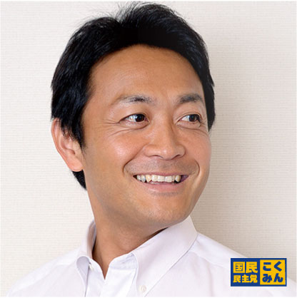

国民民主党 奈良県総支部連合会
Show the Flag!
奈良に 国民民主党 の 旗を掲げよう

Tamaki Yuichiro
私たち国民民主党は、「手取りを増やす」「人生会議（ACP）を当たり前に」など、国民のくらしに直結する政策を掲げ、実現に向けて全力で取り組んでいます。
奈良県総支部連合会としても、地域の声を国政に届け、皆さまの信頼に応える活動を進めてまいります。
aoisgmt639
#国民民主党 #手取りを増やす
人生会議(ACP)を当たり前に
TNR・元保護猫5匹と暮らす🐈⬛